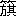

あいつらにいぬにされた俺は 俺達で
四つん這いにまで あいつらを叩きのめそう
ゆううつの中に立てる現場を畳み込んで
勇敢の中に立てる職場に置きかえよう
新らしき住居は「四方隠し」より「動き」へ
「だんまり」より「話しかけ」に流れる
駅より駅へ
列車より納戸へ
汽船より台所へ
事務所より劇場へ
憤りにふるえる方向と
組織された健康にあふれて
グレーチェを含めた十二人の同志が
カスペルを含めた八人の人形を抱えて
考え深く通り過ぎる
がさつに抱え込む腕に
辻々に話しかけるポスターの呼びかけと
舞台の代りに流しを守るかよわい親しさを
歩み続けた正しい跫音 の重みを
ほこらかな力付けを
俺達人形は――知っているのだ
函館桟橋より歩み出す連絡船の
健康に抑え切れなくなって疾走する船室
各自の部署を明瞭に見通そうと討議しつつ
新しい型態の下に更新し 躍動する
――持ち古るされた殺戮は
健康な操作を盛り上げる
訛りに濁された発音が搦み合い、興奮する
正しく動き激しく拍手する
俺達人形はぎこちなく正確に動き吃々と声高に話す
劇場全体が 一切をひっくるめて
持ち古るされた殺戮へ歩み続ける
牧師の奴が 俺をいぬに仕上げ様と
汗水たらして俺に教え込もうと
――社会主義者はどこにもいるんだ。然し吾が国には特に多い
と云った丁度その時
――チュース！ チュースと叫びつつ
俺達の糸のもつれを直す『黒子』ではなくて
俺達の糸を滅茶苦茶にかきまわす『白子』が
舞台一杯に押し塞がったのだ。
「勇敢な集り」が憎悪にふるえて煮えくるう
「官憲横暴」の声に歩み出した群集は
虱つぶしに「土足の白子」の群に打ちのめされた
持ち古るされた殺戮が執行される！
「祖国の為めとやら」に
「いぬに引っぱり込んだあいつらの為め」に失われた両足にも拘らず
「僕達」の印によって
歩み出す俺達の動きは
――方向をもてる沸騰への出発と
――あいつらの場当りなボロと＊＊とに
正確なキッカケを投げかけたのだ！
俺達は知っている
俺達の破れを修繕 い 傷を手当し
がさつに抱き上げる腕が
高手小手に縛り上げられたのを！
血あざとすりむかれと縄跡の窪みこそ
歴史の氾濫と見通しと勇敢とを導くであろう
（『プロレタリア芸術』一九二七年十月号に発表）